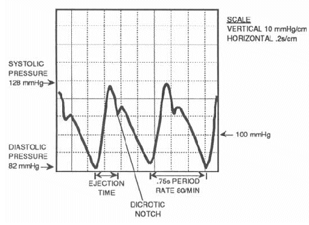
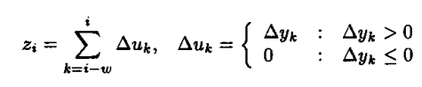
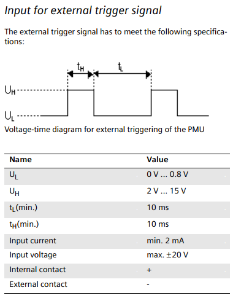

Arterial Blood Pressure Pulse Filtering and Peak Detection
This post describes the algorithm used to detect the peaks of the arterial blood pressure pulses for triggering. The input to this algorithm is the sensor value of the blood pressure catheter, which is read by the analog to digital converter at a sampling rate of 250Hz. The output of this algorithm is a TTL pulse function, which triggers the MRI machine every time a unique heartbeat is detected.
Algorithm Requirements:
The algorithm must:
- Be able to detect the pressure peaks using <40ms of delay.
- Correct DC drift in the same order of magnitude as the signal itself (past recordings with our instruments large DC drift).
- Filter out high frequency noise.
- Must perform optimally at a sampling rate between 200Hz to 500Hz.
- Must work for pulse rates between 40 BPM to 300 BPM (a very reasonable range for humans and pigs, too low for use in mice).
Filtering
Below is an image of an idealized arterial blood pressure pulse:

As you can see, there's a large pulse followed by a small reflection pulse just after the dichrontic notch. For the purposes of MRI triggering, the second pulse is not useful information.
To remove the second peak and establish a consistent baseline, I applied slope sum funtion SSF from the An open-source algorithm to detect onset of arterial blood pressure pulses by Zong et al.
The slope sum function is:

Here's an example blood pressure recording (in blue) and the corresponding slope sum function output (in red):

This simple function is extremely useful for two reasons:
- It reduces the second peak of the waveform to a negligible amplitude.
- It's based only on slope, not absolute magnitudes, so it establishes a consistent baseline in the data, removing any DC drift.
Peak Detection
A variety of peak detection algorithms were tested for this purpose. The best performing algorithm is a simple state machine with the following states:
- RISING
- PEAK DETECTED
- REFRACTORY
The state machine works by advancing two moving averages as samples are collected. Each average is based on three samples, and they are spaced 3 samples apart (for a sampling rate of 250 Hz, this makes a gives a total delay of 9 x 4ms = 36ms).
RISING STATE
When the state-machine is in rising state, it is constantly checking whether the right moving average has become greater than the left moving average. This is functionally equivalent to taking the backwards approximation of the derivative, but using averages instead of single points helps to ensure that little blips in the data won't be mistaken for the true peaks.
PEAK DETECTED
The state-machine sends a 3.3V TTL signal the to MRI scanner. For Siemens scanners the TTL signal is required to meet these criteria:

REFRACTORY PERIOD
The algorithm stays in the refractory state until all of the following conditions have been met:
- More than 170ms have passed since the last detected peak (based on a 300 BPM maximum heart rate)
- The signal has surpassed the magnitude threshold. The magnitude threshold is computed as one quarter of the magnitude of the last three detected peaks.
- The right moving average is greater than the left moving average, indicating that the blood pressure is rising.
Once all of the above criteria are met, the state-machine reverts to RISING state and the cycle repeats.
Testing
The algorithm was evaluated against the following test blood pressure waveforms.
- MIT Database of non-invasive blood pressure recordings
- Pulse oximeter of my own heart, taken while serving as test subject for a maternal health sequence.
- Invasive fetal lamb blood pressure recordings, taken by an Australian research group.